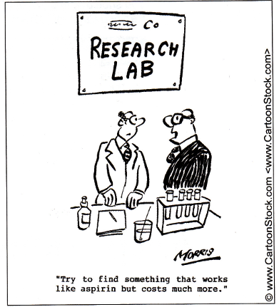

In the opening pages of Aspirin: The Remarkable Story of a Wonder Drug, Diarmuid
Jeffreys describes this little white pill as ‘one of the most amazing creations
in medical history, a drug so astonishingly versatile that it can relieve
headache, ease your aching limbs, lower your temperature and treat some of the
deadliest human diseases’.
Its properties have been known for thousands of years. Ancient Egyptian physicians
used extracts from the willow tree as an analgesic, or pain killer. Centuries later
the Greek physician Hippocrates recommended the bark of the willow tree as a remedy
for the pains of childbirth and as a fever reducer. But it wasn’t until the
eighteenth and nineteenth centuries that salicylates – the chemical found in the
willow tree – became the subject of serious scientific investigation. The race was
on to identify the active ingredient and to replicate it synthetically. At the end
of the nineteenth century a German company, Friedrich Bayer & Co, succeeded in
creating a relatively safe and very effective chemical compound, acetylsalicylic
acid, which was renamed aspirin.
The late nineteenth century was a fertile period for experimentation, partly
because of the hunger among scientists to answer some of the great scientific
questions, but also because those questions were within their means to answer.
One scientist in a laboratory with some chemicals and a test tube could make
significant breakthroughs whereas today, in order to map the human genome for
instance, one needs ‘an army of researchers, a bank of computers and millions
and millions of dollars’.
But an understanding of the nature of science and scientific inquiry is not
enough on its own to explain how society innovates. In the nineteenth century,
scientific advance was closely linked to the industrial revolution. This was a
period when people frequently had the means, motive and determination to take an
idea and turn it into reality. In the case of aspirin that happened piecemeal -
a series of minor, often unrelated advances, fertilised by the century’s broader
economic, medical and scientific developments, that led to one big final
breakthrough.
The link between big money and pharmaceutical innovation is also a significant
one. Aspirin s continued shelf life was ensured because for the first 70 years
of its life, huge amounts of money were put into promoting it as an ordinary
everyday analgesic. In the 1070s other analgesics, such as ibuprofen and
paracetamol, were entering the market, and the pharmaceutical companies then
focused on publicising these new drugs. But just at the same time, discoveries
were made regarding the beneficial role of aspirin in preventing heart attacks,
strokes and other afflictions. Had it not been for these findings, this
pharmaceutical marvel may well have disappeared.
So the relationship between big money and drugs is an odd one. Commercial
markets are necessary for developing new products and ensuring that they remain
around long enough for scientists to carry out research on them. Rut the
commercial markets are just as likely to kill off' certain products when
something more attractive comes along. In the case of aspirin, a potential
‘wonder drug' was around for over 70 years without anybody investigating the way
in which it achieved its effects, because they were making more than enough
money out of it as it was. If ibuprofen or paracetamol had entered the market
just a decade earlier, aspirin might then not be here today. It would be just
another forgotten drug that people hadn't bothered to explore.
None of the recent discoveries of aspirin's benefits were made by the big
pharmaceutical companies; they were made by scientists working in the public
sector. 'The reason for that is very simple and straightforward,' Jeffreys says
in his book. 'Drug companies will only pursue research that is going to deliver
financial benefits. There's no profit in aspirin any more. It is incredibly
inexpensive with tiny profit margins and it has no patent any more, so anyone
can produce it.' In fact, there's almost a disincentive for drug companies to
further boost the drug, he argues, as it could possibly put them out of business
by stopping them from selling their more expensive brands.

So what is the solution to a lack of commercial interest in further exploring
the therapeutic benefits of aspirin? More public money going into clinical
trials, says Jeffreys. ‘If I were the Department of Health. I would say “this is
a very inexpensive drug. There may be a lot of other things we could do with
it." We should put a lot more money into trying to find out.'
Jeffreys' book which not only tells the tale of a 'wonder drug' but also
explores the nature of innovation and the role of big business, public money and
regulation reminds us why such research is so important.